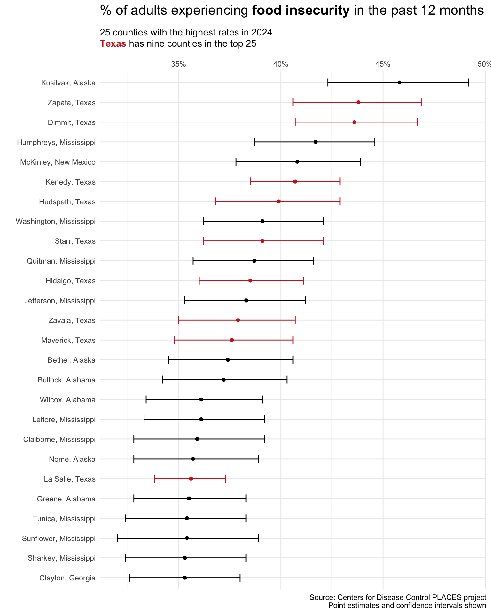
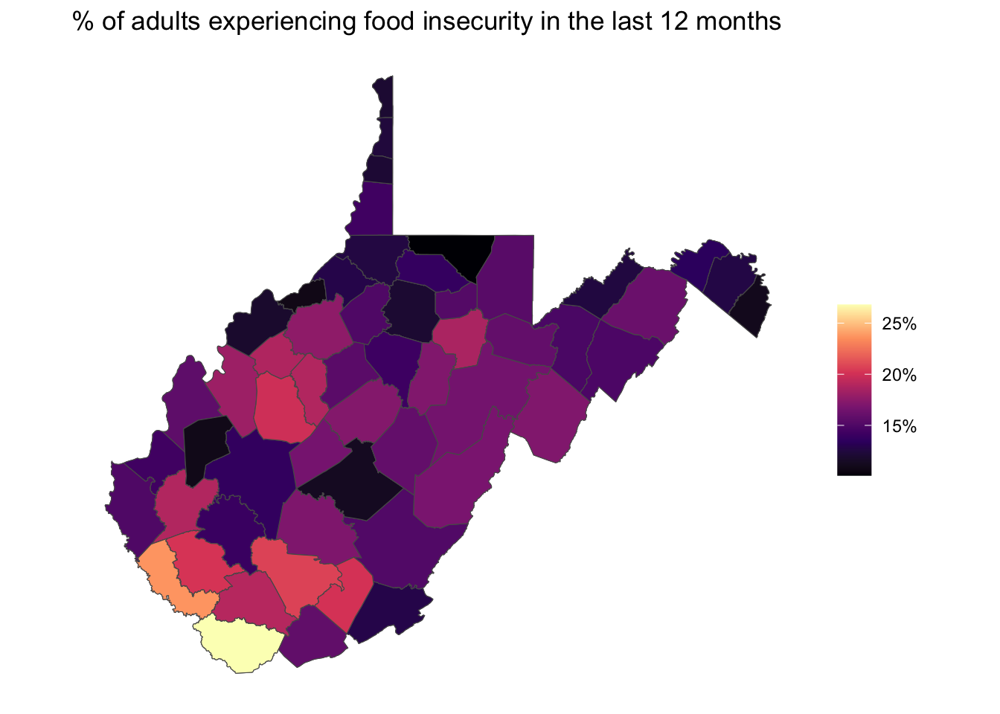

library(tidyverse)
library(CDCPLACES)Warning: package 'CDCPLACES' was built under R version 4.4.1library(gt)
library(ggtext)
library(maps)
library(sf)
library(patchwork)September 30, 2024
PLACES is a collaboration between CDC, the Robert Wood Johnson Foundation, and the CDC Foundation. PLACES provides health data for small areas across the country. This allows local health departments and jurisdictions, regardless of population size and rurality, to better understand the burden and geographic distribution of health measures in their areas and assist them in planning public health interventions.
https://www.cdc.gov/places/index.html
Warning: package 'CDCPLACES' was built under R version 4.4.1The CDCPLACES:: package includes only two functions:
get_dictionary(): shows indicators and some metadata for each indicator (measure name, release year, etc.)get_places(): fetches the data from the CDC PLACES API measureid measure_full_name
1 ARTHRITIS Arthritis among adults
2 BPHIGH High blood pressure among adults
3 CANCER Cancer (non-skin) or melanoma among adults
4 CASTHMA Current asthma among adults
5 CHD Coronary heart disease among adults
6 COPD Chronic obstructive pulmonary disease among adults
measure_short_name categoryid category_name places_release_2024
1 Arthritis HLTHOUT Health Outcomes 2022
2 High Blood Pressure HLTHOUT Health Outcomes 2021
3 Cancer (non-skin) or melanoma HLTHOUT Health Outcomes 2022
4 Current Asthma HLTHOUT Health Outcomes 2022
5 Coronary Heart Disease HLTHOUT Health Outcomes 2022
6 COPD HLTHOUT Health Outcomes 2022
measurename16_23
1 Arthritis among adults aged >=18 years
2 High blood pressure among adults aged >=18 years
3 Cancer (excluding skin cancer) among adults aged >=18 years
4 Current asthma among adults aged >=18 years
5 Coronary heart disease among adults aged >=18 years
6 Chronic obstructive pulmonary disease among adults aged >=18 years
places_release_2023 places_release_2022 places_release_2021
1 2021 2020 2019
2 2021 2019 2019
3 2021 2020 2019
4 2021 2020 2019
5 2021 2020 2019
6 2021 2020 2019
places_release_2020 _500_cities_release_2019 _500_cities_release_2018
1 2018 2017 2016
2 2017 2017 2015
3 2018 2017 2016
4 2018 2017 2016
5 2018 2017 2016
6 2018 2017 2016
_500_cities_release_2017 _500_cities_release_2016 frequency_brfss_year
1 2015 2014 Every
2 2015 2013 Odd
3 2015 2014 Every
4 2015 2014 Every
5 2015 2014 Every
6 2015 2014 Every
shortname16_23
1 <NA>
2 <NA>
3 Cancer (except skin)
4 <NA>
5 <NA>
6 <NA>From the get_dictionary() function, you can see that there are 44 records (representing 44 different measures) from health outcomes, risk behaviors, status, prevention, disability, and health-related social needs. It’s a really exciting set of metrics for evaluating patterns of morbidity and health-related metrics (such as preventative metrics or the social determinants of health).
Within the get_places() function, there are the following arguments:
geography=: argument that takes county, census, or zctastate=: takes in single state abbreviations (two-letter abbreviations), as well as vectors of multiple statesmeasure=: code for the field(s) that you want to fetch (use get_dictionary()) for a complete list of measures)release=: takes in string for year of data that you want (available for years 2020-2023)geometry=: returns an sf:: field that facilitates easy mapping (FALSE by default)cat=: instead of using the measure= argument, you can fetch entire categories of measures.age_adjust=: age adjustment is typically important for cross-regional/country comparisons. Age is a key determinant for risk of health conditions (e.g. older populations are more likely to experience dimentia). Adjusting for age differences across geographies can make for a more accurate comparison of prevalence.For my initial exploration, I’d like to visualize depression among adults in the United States.
By setting geometry=TRUE, you can then readily map the data using geom_sf().
df_state %>%
filter(data_value_type == 'Crude prevalence',
!stateabbr %in% c('AK', 'HI')) %>%
ggplot(.) +
geom_sf(aes(fill=data_value/100)) +
coord_sf(datum = NA) +
ggtitle('Depression among adults aged >= 18 years') +
scale_fill_viridis_c(option = 'magma',
labels=scales::percent,
name='') +
theme_minimal()This map still has lots of work to do, but it’s exciting to be able to access and visualize data from the CDC so easily. In my next CDCPLACES:: post, I’ll focus on improved styling of maps like this.
In this tidycensus:: post, I demonstrated:
More to come on poverty analysis in future posts!
At the time of this review, Arkansas, Colorado, Connecticut, Illinois, Louisiana, New York, North Dakota, Oregon, Pennsylvania, South Dakota, and Virginia are not included in the social needs indicators in CDCPLACES.↩︎
Social Needs – a new category of data from the CDC PLACES project
The September 2024 release from CDC PLACES includes a new category of social needs measures, which include:
For this first release of social needs indicators, there are only 39 states included.1

